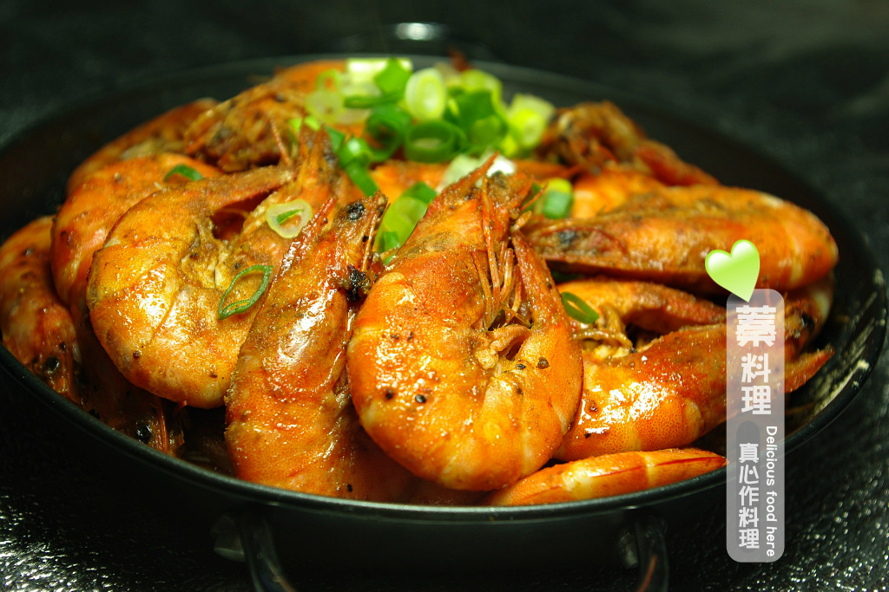
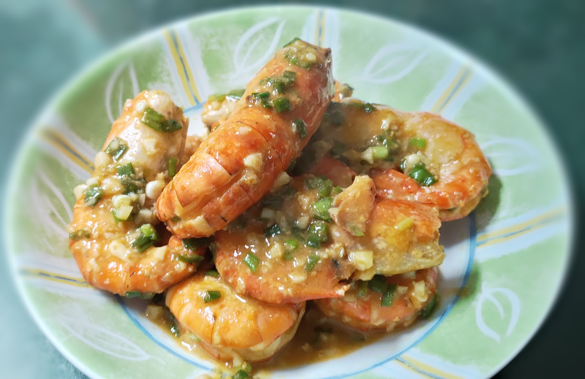
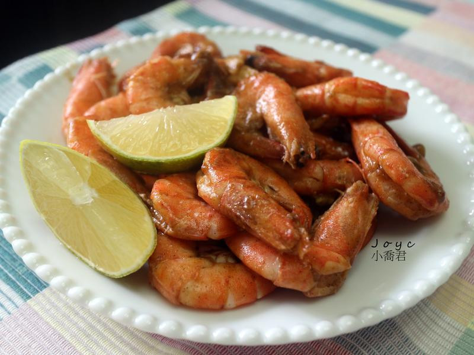

草蝦洗淨，剪去長鬚與尖刺並挑腸泥備用。
起油鍋，將草蝦煎至變色。
加入所有調味料翻炒均勻。
熄火，加入蔥花利用餘溫翻炒ㄧ下即可享用。
  
韓式涼拌山茼蒿介紹 花椰菜濃湯介紹 香菇麻油雞飯介紹 心得
練習 影片 音樂
Your browser does not support the audio element. Your browser does not support the video tag.